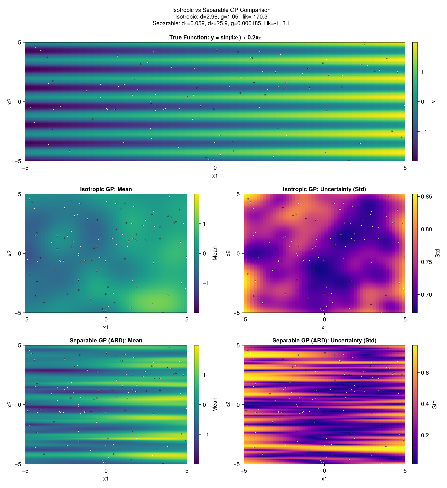

Multivariate Inputs with ARD
This example demonstrates how to fit a separable GP (also known as ARD - Automatic Relevance Determination) to multi-dimensional input data, allowing the model to learn different lengthscales for each input dimension.
Why Per-Dimension Lengthscales?
In standard (isotropic) GPs, a single lengthscale parameter controls how quickly the function varies across all input dimensions. This assumes the function changes at the same rate regardless of direction - an isotropic assumption.
However, real-world functions are often anisotropic: they vary more rapidly in some directions than others. Consider:
- A function of (temperature, pressure) where small temperature changes have large effects but pressure changes matter less
- A spatial process where north-south correlation differs from east-west
- Any problem where some inputs are more "relevant" than others
The separable GP (or ARD kernel) addresses this by assigning a separate lengthscale d[k] to each input dimension k. The kernel becomes:
k(x, x') = exp(-Σₖ (xₖ - x'ₖ)² / dₖ)A smaller lengthscale means the function varies more rapidly in that dimension (high sensitivity), while a larger lengthscale means smoother variation (low sensitivity). After fitting, the relative magnitudes of the lengthscales reveal which inputs matter most - hence "Automatic Relevance Determination."
Setup
using laGP
using Random
using CairoMakieGenerate Training Data
We use a 2D test function from the tinygp tutorial:
# Target function: y = sin(x₁) * cos(x₂ + x₁) + noise
# This has anisotropic structure - the sin(x₁) term creates faster variation in x₁
Random.seed!(48392)
n = 100
X = -5.0 .+ 10.0 .* rand(n, 2) # Uniform on [-5, 5]²
yerr = 0.1
y = sin.(X[:, 1]) .* cos.(X[:, 2] .+ X[:, 1]) .+ yerr .* randn(n)
println("Training data: $n points in 2D, noise σ = $yerr")Initialize Hyperparameters
Use data-driven initialization for the lengthscales and nugget:
# darg_sep returns ranges suitable for separable GP
d_info = darg_sep(X)
g_info = garg(y)
println("Lengthscale range: [$(d_info.ranges[1].min), $(d_info.ranges[1].max)]")
println("Nugget range: [$(g_info.min), $(g_info.max)]")
# Initial lengthscales (same for both dimensions)
d_init = [d_info.ranges[1].start, d_info.ranges[2].start]Create and Fit Separable GP
# Create GP with per-dimension lengthscales
gp = new_gp_sep(X, y, d_init, g_info.start)
println("Initial: d = $(round.(gp.d, sigdigits=4)), g = $(round(gp.g, sigdigits=4))")
# Joint MLE optimization
drange = (d_info.ranges[1].min, d_info.ranges[1].max)
grange = (g_info.min, g_info.max)
result = jmle_gp_sep!(gp; drange=drange, grange=grange, verb=0)
println("Optimized: d = $(round.(gp.d, sigdigits=4)), g = $(round(gp.g, sigdigits=4))")
println("Log-likelihood: $(round(llik_gp_sep(gp), sigdigits=4))")Interpreting the Lengthscales
The optimized lengthscales reveal the function's anisotropic structure:
println("Lengthscale interpretation:")
println(" d[1] (x₁ dimension) = $(round(gp.d[1], sigdigits=4))")
println(" d[2] (x₂ dimension) = $(round(gp.d[2], sigdigits=4))")
if gp.d[1] < gp.d[2]
ratio = gp.d[2] / gp.d[1]
println(" → x₁ is $(round(ratio, sigdigits=2))x more sensitive (smaller lengthscale)")
endFor our test function sin(x₁) * cos(x₂ + x₁), we expect d[1] < d[2] because:
- The
sin(x₁)term creates oscillations primarily along the x₁ axis - The
cos(x₂ + x₁)term couples both dimensions but adds smoother x₂ dependence
The MLE correctly identifies that x₁ requires a shorter lengthscale to capture the faster variation.
Prediction
# Create prediction grid
n_x1, n_x2 = 100, 50
x1_grid = range(-5, 5, length=n_x1)
x2_grid = range(-5, 5, length=n_x2)
# Build test matrix
XX = Matrix{Float64}(undef, n_x1 * n_x2, 2)
let idx = 1
for j in 1:n_x2
for i in 1:n_x1
XX[idx, 1] = x1_grid[i]
XX[idx, 2] = x2_grid[j]
idx += 1
end
end
end
# Get predictions
pred = pred_gp_sep(gp, XX; lite=true)
# Reshape for plotting
mean_grid = reshape(pred.mean, n_x1, n_x2)
std_grid = reshape(sqrt.(pred.s2), n_x1, n_x2)Visualization
fig = Figure(size=(1000, 450))
# Predicted mean surface
ax1 = Axis(fig[1, 1], xlabel="x₁", ylabel="x₂", title="Predicted Mean")
hm1 = heatmap!(ax1, collect(x1_grid), collect(x2_grid), mean_grid', colormap=:viridis)
scatter!(ax1, X[:, 1], X[:, 2], color=:white, markersize=5,
strokecolor=:black, strokewidth=0.5)
Colorbar(fig[1, 2], hm1, label="Mean")
# Prediction uncertainty
ax2 = Axis(fig[1, 3], xlabel="x₁", ylabel="x₂", title="Prediction Uncertainty (Std)")
hm2 = heatmap!(ax2, collect(x1_grid), collect(x2_grid), std_grid', colormap=:plasma)
scatter!(ax2, X[:, 1], X[:, 2], color=:white, markersize=5,
strokecolor=:black, strokewidth=0.5)
Colorbar(fig[1, 4], hm2, label="Std")
# Title with optimized hyperparameters
Label(fig[0, :],
"Separable GP (ARD): d₁=$(round(gp.d[1], sigdigits=3)), d₂=$(round(gp.d[2], sigdigits=3)), g=$(round(gp.g, sigdigits=3))",
fontsize=16)
fig
The left panel shows the predicted mean surface smoothly interpolating the training data (white points). The right panel shows prediction uncertainty - low near training points and higher in regions with sparse data.
Key Concepts
Isotropic vs Separable (ARD) Kernels
| Property | Isotropic (GP) | Separable (GPsep) |
|---|---|---|
| Lengthscale | Single d for all dimensions | Vector d[1:m] per dimension |
| Assumption | Function varies equally in all directions | Function can vary differently per dimension |
| Parameters | 2 (d, g) | m+1 (d[1], ..., d[m], g) |
| Use when | Dimensions are interchangeable | Dimensions have different relevance |
When to Use ARD
Use GPsep (separable/ARD) when:
- Input dimensions have different scales or units - e.g., mixing temperature (°C) and concentration (mol/L)
- Some inputs may be irrelevant - ARD can discover this via large lengthscales
- Physical intuition suggests anisotropy - directional processes, hierarchical effects
- Variable importance is of interest - lengthscale ratios indicate relative sensitivity
Use GP (isotropic) when:
- Dimensions are exchangeable - e.g., spatial coordinates with no preferred direction
- Limited data - fewer parameters means less overfitting risk
- Computational efficiency - isotropic kernels can be slightly faster
Practical Notes
Initialization: Both dimensions start with the same lengthscale. The optimizer then differentiates them based on the data.
Identifiability: With very little data, ARD lengthscales may not be well-determined. Consider isotropic GP if you have fewer than ~10 points per dimension.
Scaling inputs: For best results, normalize inputs to similar ranges before fitting. This prevents numerical issues and makes lengthscale magnitudes comparable.
Nugget estimation: The nugget
gcaptures observation noise plus any unmodeled small-scale variation. A larger nugget indicates noisier data or model misspecification.